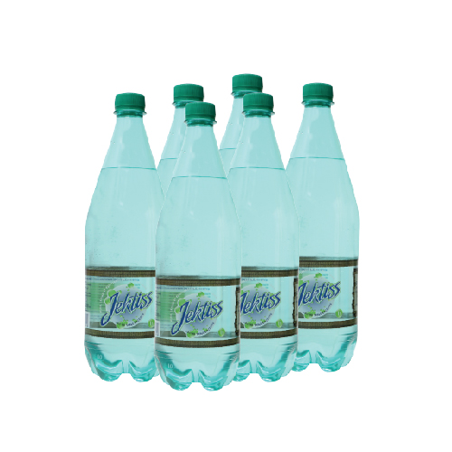

← Prix de toutes les eaux minérales en Tunisie
سعر ماء Jektiss في تونس
Prix relevés le 05/10/2026
| Format | Prix bouteille par enseigne | Stika |
|---|---|---|
| 500 ml gazeuse | Carrefour 0,450 DT | 5,400 DT (×12) |
| 1 L gazeuse | Carrefour 0,670 DT | 4,020 DT (×6) |
| 1 L | Carrefour 0,590 DT · Géant 0,590 DT | 3,540 DT (×6) |
Prix relevés le 05/10/2026 sur les boutiques en ligne des grandes surfaces — indicatifs, ils peuvent varier selon le magasin. Stika = pack de 6 bouteilles (12 pour les 50 cl).
Partager sur WhatsAppeau de table — d'après les fiches de l'Office National du Thermalisme (source), en mg/L sauf pH.
| Résidu sec (TDS) mg/L | 368 |
| Calcium mg/L | 24.0 |
| Magnésium mg/L | 17.02 |
| Sodium mg/L | 51.14 |
| Potassium mg/L | 1.67 |
| Bicarbonates mg/L | 48.8 |
| Sulfates mg/L | 91.94 |
| Chlorures mg/L | 66.56 |
| Nitrates mg/L | 6.7 |
| Fluorures mg/L | 0.37 |
| pH | 7.6 |
La commande avec livraison à domicile arrive bientôt sur Prix des Eaux de Tunisie : vous commanderez auprès de grossistes et dépôts partenaires de votre région, à leurs propres prix, livraison comprise (les prix ci-dessus sont ceux des grandes surfaces, à titre indicatif). Être prévenu de l'ouverture.